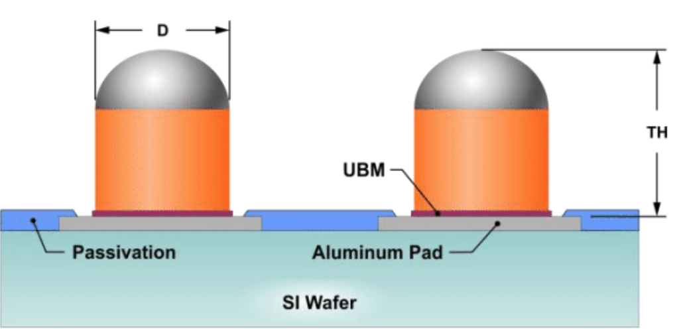
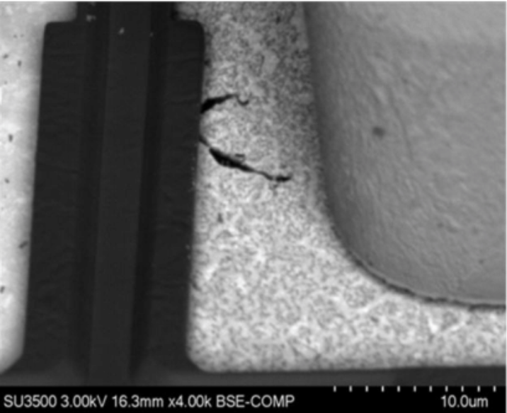
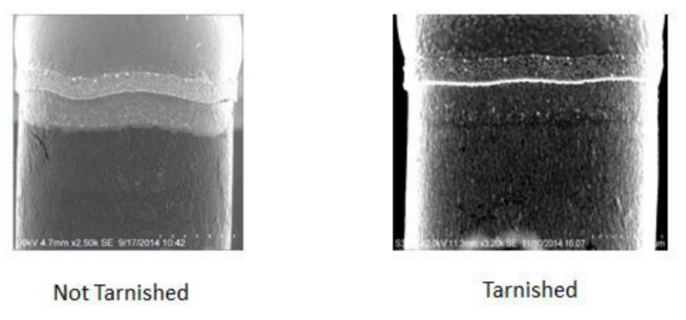
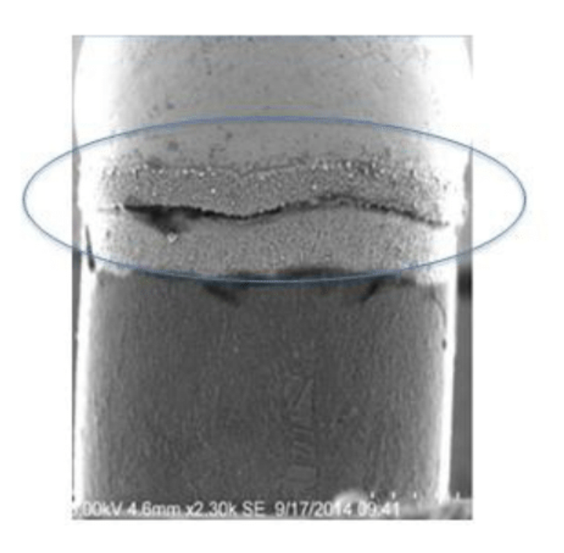
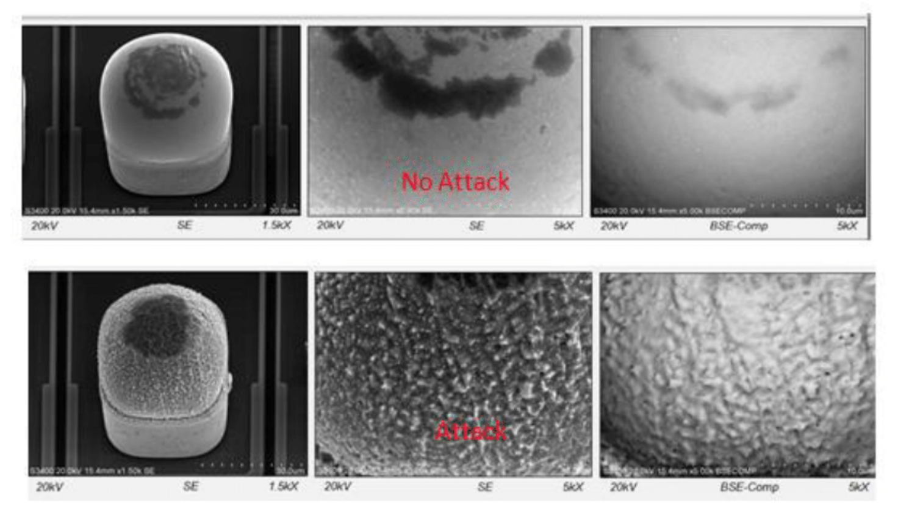
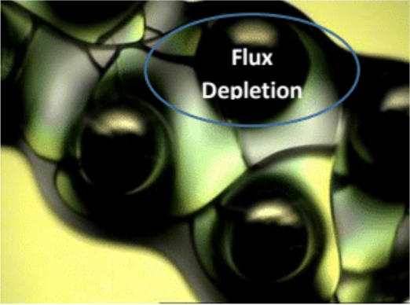
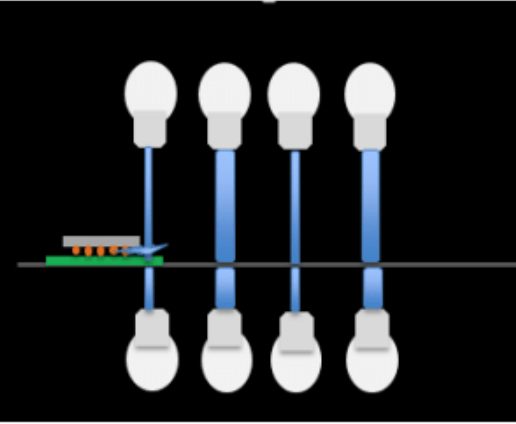
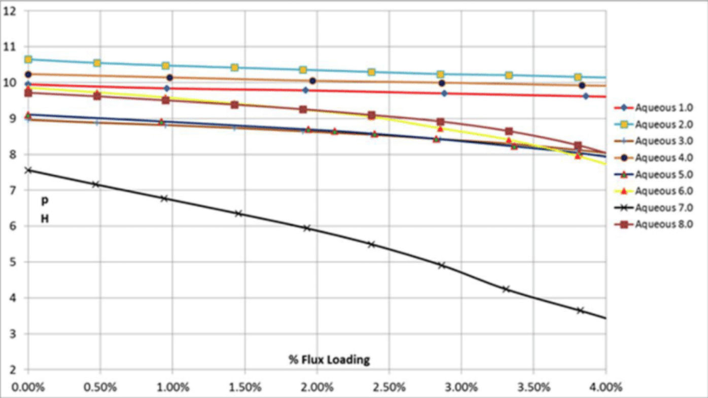
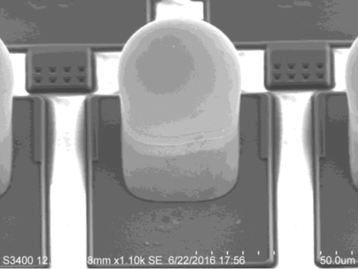

Issue 1 | Sunday, February 18th, 2018
While they are essential characteristics of an AOI system, 3D inspection and high speed are just as important for AXI. With time-optimized image acquisition technologies and efficient handling concepts, in-line X-ray performance is continually ...read moreincreasing. Advantageous automation possibilities also exist where the use of manual X-ray (MXI) is recommended.
In the inspection of electronic assemblies, especially for components with hidden solder joints such as ball grid arrays (BGA) or quad-flat no-leads packages (QFN), automatic optical inspection (AOI) is insufficient. Random samples with MXI arise as one option, but this is not always the optimum solution. Where product safety plays an especially crucial role, particularly in the automotive area, a fast, thorough inspection of solder joints is needed. This calls for a fully automatic in-line X-ray inspection (AXI), which also satisfies the speed constraints. On such a system, throughput is heavily determined by the inspected assembly handling, since a fully protected housing with mechanical gates is necessary.
Fast, precise change One ingenious solution to the in- and outfeed of the assemblies can reduce the time to change them to under four seconds. This results from a hardware concept that works with several printed circuit boards that can be in the system simultaneously and are moved in overlapping time slices. Because of the shortened paths, the corresponding switching of assemblies from one position to the next is extremely quick and precise. This reduction in handling time reduces the idle time necessary as overhead just to change assemblies. The actual productive time is the pure analysis time, in which the images are captured and evaluated. Thus, if the handling is reduced, e.g., from the previously typical 10-12 seconds to 4 seconds, with a pure analysis time of an additional 10 seconds, total throughput time is 14 seconds instead of 20 seconds – a gain of 30 percent. Even with just this aspect in mind, a comparison of the available systems is definitely worthwhile. Optimizing the analysis time can bring additional significant throughput gains. During program creation, the time-consuming 3D inspection can be restricted to those components for which it is truly necessary. Everywhere else, faster orthogonal and angled processes are employed.
First-class 3D AXI hardware Optimized solutions for fast image acquisition also have a positive effect on the analysis time. High-value linear motors, which ensure that flat panel detectors on a cross table (xy-table) can be moved quickly to the different positions, sharply cut image acquisition times for variably angled radiation penetration, especially when acquiring several views for 3D reconstruction. With the right settings, electronic assemblies can also be optimally represented in the 3D image from predefined perspectives. Experience points out, e.g., that for structures generally arranged on a grid, such as BGA balls, irregularly arranged acquisition positions are recommended. Because of the resulting suppression of periodic structures, artifacts can be largely eliminated, significantly improving the 3D results of the planar computed tomography (PCT).
During the development and revision of an AXI system, particularly in this context it has proven expedient to lay out the overall 3D inspection area with ample space, to give the ultimate user complete flexibility in selecting the acquisition angle. In addition to larger penetration angles and different perspectives, leading to better 3D results, larger printed circuit boards can be inspected. For high throughput, the use of a flat panel detector with as large a field of view as possible is important.
Many useful options The 3D reconstruction processes are central in determining the quality of the 3D reproduction of the acquired scene. Besides simple and fast methods such as the addition process, the Viscom AXIs implement the FDK process (Feldkamp, Davis, Kress). Dirk Nülle, managing AXI product developer at Viscom and responsible for the new X7056-II 3D AXI system: "This special process of filtered rear projection delivers better slice image reconstructions, especially for BGAs. However, it does take somewhat more computation time." For a user-friendly display on the one hand, but for basic image improvement too, there are also appropriate aids such as contrast filters or the possibility of grayscale value adaptation (gamma correction). So that all results are flawless, even for sagging printed circuit boards, it is also possible to add a height correction to the automatic inspection run. This is accomplished by a tool that correspondingly adapts the individual inspection positions. The calculated sag model of the electronic assembly is then applied for each inspection method.
The inspection system software should be as easy to operate as possible. One example: The user can specify 3D AXI acquisition positions, has various resolution stages to choose from thereby, and decides on a number of viewing positions appropriate to the application and desired inspection depth. Later, depending on the task, a selection between these predefined 3D cameras can be made. Again depending on the task, either inspection quality or cycle time is the priority. "In our experience, at least nine views are necessary to realize 3D. Yet sometimes, it turns out more acquisitions are needed, depending on shadowing and on which components are in opposite positions on a printed circuit board assembled on both sides," states Dirk Nülle.
Conclusive results Today, partial or complete volumes of an object inspected with 3D AXI can be displayed on a screen relatively quickly and easily and be tilted, rotated and zoomed with a mouse or on a touch screen. A special feature compared to a purely optical reconstruction: A slice-by-slice view into the interior of an object, such as an array of BGA balls, is possible. Setting up such a tool on the verification station yields additional options for explicit defect classification and for researching defect causes in the process.
The capability to calculate meaningful volume information from several two-dimensional penetrations of the inspection object and derive individual slices from this information is the most important advantage of the 3D technology in X-ray inspection of electronic assemblies. If, for example, the voids on a QFN are to be inspected, but there is another component, say, a chip, on the other side of a printed circuit board assembled on both sides, then it is likely that not all of the air inclusions would be optimally visible in typical X-ray images, because the objects overlap in the image and conceal each other. The 3D reconstruction of the volumetric unit in the 3D X-ray inspection permits precisely the relevant slices to be separated, greatly facilitating this type of inspection without interfering overlapping. Because in principle, the entire volume of the scene can be irradiated so its structure can also be determined, the slices do not necessarily have to be made only horizontally. For example, a vertically separated slice may be able to deliver important information, such as that one BGA ball in the outer row is not attached, indicating a head in pillow (HIP) defect. On a printed circuit board assembled on both sides, now the components located on each side are seen. Each slice image, whether horizontal or vertical, can be directly forwarded to the analysis. Voids, for instance, can now be identified and classified easily and without error.
Balanced combined solution Additional advantages arise when AXI and AOI are integrated in a single system. With this combination, not only can the proportions of orthogonal, angled and 3D X-ray be optimally tuned to each other, but by inclusion of the optical inspection methods their use can be reduced to a minimum, which in turn further improves the cycle time of the entire inspection while – as an often overlooked effect – the radiation load on individual components is lowered. Some criteria, most apparently the example of OCR (optical character recognition) – recognizing plain text on the component – must be conducted purely optically; in other cases features can be captured either optically or with X-ray. Logically, other effects can only be inspected with X-ray technology methods.
In a good combination system, printed circuit boards shuttle quickly and nearly simultaneously between the two inspection sections. Optical fiducial cameras can already start before the lead plate separating the two inspection sections has fully closed. With just a single system, complete, fast inspection coverage can be guaranteed. If there is a suspicion that undetected hidden defects still exist after the optical inspection, an additional X-ray inspection that runs in the same system can be automatically started just for these cases.
The operating convenience of such a combination system can extend to integrated automatic inspection program creation and the use of an inspection simulator with which the user can run through different inspection scenarios off-line, e.g., with greater weighting of the inspection quality, the costs or the speed.
Interplay with MXI The X-ray results from the inspection system can be linked with other inspection results (3D SPI, 3D AOI) via a networked line, e.g., with Viscom Quality Uplink, and intelligently merged for evaluations. Incidentally, this does not only apply to in-line X-ray. MXI systems also prove themselves as true team players here. "I can transfer the inspection results from the line to a manual system and, for example, conduct detailed inspection at the corresponding positions for ambiguous defects or random samples there," states Rolf Demitz, co-responsible for MXI development and other assignments as division head at Viscom. Post-classification software, of course, can also be used on such a system.
Despite the ever increasing speed of the AXI solutions, manual X-ray remains an essential component in electronics production. Both reclaimed electronic assemblies and newly developed prototypes can be optimally inspected with MXI. Normally, this is done without taking cycle time into account. The inspection takes place between the tube and the pivotable detector (image converter) for as long as is necessary. The object arrives, e.g., on the rotating platform of a manipulator that the employee can maneuver upwards and downwards with a joystick. The most impressive characteristic of the results is the extremely high detail recognition, which also benefits 3D reconstructions from both rotary and planar CT. Naturally, certain automations can already be realized with a manual system: Position lists and classifications can be created for small series so only the locations that are actually relevant are inspected. For program creation, the operator can draw on CAD data, just as for in-line X-ray, and start a series inspection with fully automatic evaluation. It is also conceivable that a magazine connected to the system, with the assistance of an appropriate handling concept, will permit the inspection to run entirely independently without other intervention for a given time (batch operation). In principle, even connection to the production line is possible.
Wide offering for X-ray application Viscom offers complete versatility for X-ray inspection of electronic assemblies. The X8011-II PCB is extremely successful in the MXI area. For heavy components up to 15 kg and a sample size of up to 722 mm diameter, the otherwise similarly technically equipped system X8068 is ideally suited. For in-line X-ray inspection, the X7056RS has been used around the world for many years. When purchasing, a majority of the users decide to integrate an appropriate optical inspection solution from Viscom. The new version of this popular system is the X7056-II – equipped with the innovative handling concept xFastFlow, which can in- and outfeed printed circuit boards in less than four seconds, and also designed as a combination option with 3D AXI and 3D AOI. The X7056 series offers the possibility to order the so-called "AOI-prepared" version, so the customer can deploy an AXI system that can later be quickly and economically extended with the AOI option. The X7056-II is available with the Viscom software vVision to offer the same ease of operation the company has already realized for its AOI as well as SPI and CCI systems; that is, also for solder paste and conformal coating inspection on electronic assemblies.
For more information, contact Olaf Szarlan, marketing, at Viscom AG at Carl-Buderus-Straße 9-15 - 30455 Hannover; +49 511 94996-718; Email: olaf.szarlan@viscom.de; Web site: www.viscom.com.
read lessIssue 1 | Sunday, February 18th, 2018
Today, the reliability of gallium nitride (GaN) device technology has improved significantly, making GaN a viable technology for both military and commercial applications. Consequently, integrated circuit (IC) manufacturers generally have migrated to GaN and other advanced semiconductor compounds to address next-generation, high-power output applications. In several military...read more radars, GaN-based devices have demonstrated five to ten times more power density than gallium arsenide (GaAs) or silicon power devices.
While designers can reduce the size of a device using GaN technology, it creates new complications. The more sophisticated the device, the thinner and more fragile the air-bridged die, the higher the number of I/Os, and the smaller the pitch between interconnects. These micro-miniature structures make it more difficult to assemble rapidly, accurately, consistently, and economically. Conventional methods of handling complex IC’s typically have been labor intensive, with unique process challenges in picking, placing, and wire bonding, leading to lower yields and reduced reliability.
To overcome these labor-intensive, process-dependent elements, NEO Tech has introduced its new generation of assembly automation, as well as more sophisticated levels of process characterization, enabling lower costs and enhanced reliability.
NEO Tech was one of the first US companies to bring commercially available, integrated automation to very thin and fragile semiconductor die, and the latest innovations are a significant extension of this achievement. For example, in existing manual or semi-automated lines, operators must subjectively judge the coverage under the die and visually estimate the permissible amount of material extruding from the edges, incurring the variability inherent in such methods. NEO Tech’s new “Auto Line” is dedicated to performing and measuring this task more accurately, consequently producing significant gains in repeatability, quality and reliability.
For GaN and similar advanced die or ICs, truly “hands-free” automation requires an accurate, high-resolution method for dispensing the precise amount of epoxy every time. The die-bonding platform must be constantly stable, regardless of fluctuations in temperature and humidity. NEO Tech’s unique machine configuration consistently achieves high-precision epoxy dispensing.
NEO Tech partnered with leading precision assembly equipment manufacturer Palomar to develop and produce specialized die-attach systems using optically balanced breadboards, with internal dampening built into the honeycomb structure. The equipment’s resulting superior vibration dampening supports precision die attach at much higher speeds.
NEO Tech’s achievements also include the ability to reliably handle large, thin, MMIC devices. Developments include extremely accurate dispense for epoxy and a proprietary die eutectic attach process, using solder preforms. These innovations enable manufacturing of MMICs with minimum voiding under dies as thin as 0.002 inches. Originally, NEO Tech developed this system to meet the needs of high-reliability applications in defense, advanced telecommunications, and implantable medical devices. System designers using large, thin, MMIC devices in their high-frequency applications now can work confidently with this option for both prototyping and manufacturing at scale.
The industry average for thin die damage in handling before placement into a higher level assembly exceeded 20 percent. For odd-shaped and extremely thin die and ICs, NEO Tech’s fully automatic eutectic die-attach process performs with consistently near-zero rework. In addition to practically eliminating damage and rework, NEO Tech’s continuous, contiguous auto line guarantees planar placement of these delicate die with minimal interface voids.
For the notoriously sensitive eutectic die-attach method, the tuned handling and improved process accuracy represent significant breakthroughs in product quality, reliability, and cost.
Increasing overall process consistency by eliminating touch in areas such as epoxy dispense and eutectic attach was the critical first step. Gaining the full economic benefit, however, required integrating these and other advancements into an automated line capable of producing high-complexity devices at rates and yields supportive of today’s most demanding programs. NEO Tech has accomplished this with a level of quality and cost-efficiency exceeding existing MIC assembly touch methods.
To further guarantee reliability and quality, thorough cleaning is mandatory to prevent latent defects in interface junctions during wire-bond interconnect. NEO Tech’s automated process includes in-line argon plasma cleaning just prior to wire or ribbon bonding, ensuring complete residual organic removal without exposing the IC to ion or UV.
NEO Tech’s hands-free, continuous, contiguous, automatic MIC assembly lines operate in a lean manufacturing environment, with high repeatability and near-zero rework. High-frequency system designers seeking domestic suppliers offering the highest quality and the most cost-effective MIC solutions are encouraged to take advantage of these next-generation capabilities.
About the Author Jim Angeloni is Chief Operating Officer, Aerospace and Defense Operations, at NEO Tech. Jim is a recognized expert in the field of microelectronic assembly, and as an innovator in the industry for more than 30 years, and as a charter member of the International Microelectronics and Packaging Society (IMAPS).
read lessIssue 1 | Mike Bixenman, KYZEN
The miniaturization of modern electronics continues to challenge the effectiveness of common cleaning processes and the ability to obtain desired cleaning performance and optimal yield. When soldering the flip chip die to the ball grid array (BGA) interposer, water soluble paste fluxes are used to ensure a strong metallurgical bond. Ineffectiveness in removing flux residues can lead to contamination, underfill voiding, poor yield, and reliability issues in the field...read more
Devices utilizing copper pillar technology have more interconnects per surface area, which results in tighter pitch and lower standoff gaps. As standoff gaps lower, flux residues have less area to outgas during reflow. This results in more active residues under the die. A longer wash time using water with a low concentration of cleaning agent is typically required to properly clean die under these lower standoff gaps.
Aqueous saponified cleaning agents diluted in deionized (DI) water have commonly been used to remove flux residues under the flip chip bottom termination. Saponified cleaning agents are mildly alkaline to form an attractiveforce to the flux residue. However, alkaline cleaning agents can react, consume and corrode reactive metals. Longer time in the cleaning solution increases chemical attack, which can cause failures due to mechanical stresses.Potential metal incompatibilities and insufficient rinsing represent the most common challenges for engineering improved cleaning agents for cleaning Copper Pillar flip chip package
Current saponified cleaning solutions adversely react with many metals (Al, Cu, Sn, Ag, Ni, etc.) that are present on the Copper Pillar die. Especially, in alkaline solutions, Al is readily attacked causing galvanic corrosion reactions. Also, there is the potential for defects and discoloration on Cu and SAC alloys during the cleaning process. Crevice corrosion from cleaning solution reactions with exposed metals can weaken interconnects and reduce mean time to failure.
COPPER PILLAR TECHNOLOGY
Copper pillar bumping is a growing design trend in electronics packaging. Copper pillar technology offers many advantages in speed and line pitch. Building integrated circuits with copper and aluminum reduces the potential for electromigration while improving current carrying capacity. Likewise, copper pillar is more cost effective than Austud bumps for high bump designs. Finer pitch can be achieved, which translates into higher performance over a smaller surface area (Figure 1)

Figure 1. Copper Pillar
DesignUnlike the traditional bumping process, the copper pillar design exposes a number of reactive metals to the cleaning process. Many of these metals react and dissolve when exposed to saponified cleaning agents. Corrosion inhibitors can reduce, and in some cases, prevent this interaction. The challenge is designing cleaning agents that are effective at inhibiting the different exposed metals that the cleaning agent comes in contact with. If longer cleaning time is needed, the risk of metal interaction is greater.
Aluminum is highly reactive when exposed to alkaline cleaning agents. Common saponified aqueous cleaning agents that are used to clean traditional bumped die work well. These cleaning agents are not suitable for cleaning Copper Pillar die due to their propensity to attack aluminum and copper. Aluminum is a diffusion barrier metal for copper. Common alkaline cleaning agents can attack, dissolve and crack the aluminum pad. Figure 2 is an example of how a traditional saponified cleaning agent attacks, corrodes and dissolves the aluminum pad.

Figure 2. Al pad Dissolves, Cracks and Turns White
Copper is also reactive when exposed to alkaline cleaning agents. Cleaning solutions with poor copper inhibition will tarnish and oxide the side of the copper pillar (Figure 3)

Aluminum is highly reactive when exposed to alkaline cleaning agents. Common saponified aqueous cleaning agents that are used to clean traditional bumped die work well. These cleaning agents are not suitable for cleaning Copper Pillar die due to their propensity to attack aluminum and copper. Aluminum is a diffusion barrier metal for copper. Common alkaline cleaning agents can attack, dissolve and crack the aluminum pad. Figure 2 is an example of how a traditional saponified cleaning agent attacks, corrodes and dissolves the aluminum pad. Figure 2. Al pad Dissolves, Cracks and Turns White Copper is also reactive when exposed to alkaline cleaning agents. Cleaning solutions with poor copper inhibition will tarnish and oxide the side of the copper pillar (Figure 3).Figure 3. Copper Pillar Oxidation Nickel functions as the intermetallic layer between the copper pillar and SAC 305 alloy. Cleaning agents high in alkalinity have been shown to undercut the copper/nickel adhesion layer (Figure 4)

Figure 4. Nickel Adhesion Layer Undercut SAC 305 alloy can pit and darken when exposed to highly alkaline cleaning agents. Longer exposure time increases the interaction (Figure 5).

Figure 5. Solder Alloy Pitting The problem is that cleaning agents that react with the exposed metals results in various forms of pitting, galvanic and crevice corrosion. The corrosion effect not only effects electrical performance but also reduces adhesion. Weakened intermetallic layers compromise the integrity of the copper pillar design.
Balanced Cleaning Agent Design A well-designed cleaning agent must be capable of removing process residues without causing material compatibility issues. The jobs of the flux engineered into solder pastes, paste fluxes and liquid fluxes are many.
Engineered water-soluble paste fluxes are used to join the interposer with the copper pillar preformed bumps. The flux removes oxide layers from the solder cap and placement pads. During solder reflow, the flux improves wetting to enable a strong metallurgical bond from the flip chip die to the substrate. During reflow, the flux residue will accumulate under the die and feature out near the edge of the die. At the edge of the die, flux can become depleted to the point where water only is insufficient to clean the edge of the die (Figure 6).

Figure 6. Flux depletion at the edge of the die Alkaline saponified cleaning agents commonly are used at low concentrations in DI Water, ranging from 3-8 percent to improve wetting and removal of charred water soluble flux residues. An alkalline cleaning agent exhibits a strong intermolecular force for the water soluble flux residue. This cleaning agent design worked well when cleaning a traditional bumped die that only exposed the SAC alloy to the cleaning process. As illustrated in the introduction section of this article, these alkaline cleaning agents are highly reactive to other exposed metals that make up the Cu Pillar design.
An effective cleaning process requires both chemical and mechanical forces to rapidly clean the Flip Chip – BGA package. The packages are placed in a fixture and cleaned at high throughput rates through the cleaning process (Figure 7). If either the chemical or mechanical forces are not balanced, parts will exit the cleaner with resdiue remaining, which impact yields. The job of the cleaning agent is critical in that it must rapidly wet and dissolve flux residues quickly. Other critical properties are materials compatibility, in the case of the Cu Pillar with exposed metals, and low foaming.

Figure 7: Cleaning Process Illustration If the exposed metals on the Cu Pillar are contacted with a cleaning solution that reacts with a metal, metal ions will be lost from the metal into the aqueous cleaning solution, leaving electrons behind on the metal. A metal that is attacked by the cleaning solution loses some of the metal electrons through a half cell electrochemical oxidation. The aqueous cleaning agent solution where metal electrons are gained is the reduction electrochemical half cell. A number of issues can occur, such as deformation, cracking and weakened bonds. When exposed to mechanical stresses, the package can cause an in-field failure. A balanced cleaning agent must work as well as the traditional alkaline cleaning agent for cleaning Cu Pillar die. One approach is to design a cleaning agent that is neither alkaline or acidic. The intermolecular cleaning forces using a neutral cleaning agent will not form as strong of an attraction to the flux residue. To overcome this issue, the cleaning agent can be build with functional additivies that dissolve instead of saponifying the residue. Potential tradeoffs when cleaning a water soluble residue are bath life due to a pH shift into the acidic range, higher operating concentration to clean the residue and poorer rinsing effects. This option provides better materials compatibility on Cu Pillar expsed metals but gives up some of the cleaning performance that has commonly been experienced with alkalline cleaning agents.
A truly balanced cleaning agent has the chemical forces needed to remove the flux residues without giving up on the common benefits found with the traditional alkaline cleaning agents. The engineered cleaning composition requires the following properties:
The next-generation cleaning agent designed to clean Cu Pillar die is formulated to rapidly clean water soluble flux residues and to not interact (attack) exposed metals. The cleaning agent is mildly alkaline to provide needed intermolecular forces of attraction. This feature provides excellent cleaning, holding the soil in the cleaning agent, improved rinsing and long bath life by stabilizing the pH as flux accumulates into the wash bath. Figure 8 illustrates this point. Notice how the Aqueous 7 pH drops as the bath loads with flux. This pH drops affects both cleaning and rinsing. Aqueous 8 is a truly balanced cleaning agent that cleans well, holds the soil and does not attack metallization.

Figure 8. Cleaning agent pH as a function of bath loading The SEM image of the CuPillar die exposed to the next balance cleaning agent design shows to no material effects to the exposed metals (Figure 9). The balanced cleaning agents hits the design criteria of both cleaning and protecting the CuPillar die. Some alkaline builder is used to achieve high performance cleaning while addressing the tradoffs. The cleaning agent is a dropin to the current process with comparable performance at the designed concentration, temperature, throughput and mechanical impingment settings. The cleaning agent has no foam issues when sprayed at high impingment energy. The product rinses cleanly with DI water.

Figure 9. Next-Generation Cleaning Agent that does not attack exposed metals. Summary Copper Pillar flip chip has moved into a market leading position due to the ability to reduce pitch and increase I/O. Improperly cleaned devices can result in poor interfacial bond strengths, electrochemical migration and failures at the interconnect. Cleaning the package following assembly is defined and a common practice. Traditional alkaline cleaning agents attack exposed metals on the CuPillar design. This quaility issue can result in-field failures. A next-generation balanced cleaning agent design that is a drop replacement for the current alkaline cleaning agents was needed. These cleaning agent designs do not materially attack the exposed metals on the CuPillar design. They are a drop in replacement for the traditional alkaline cleaning agents with no performance drop off.
For more information, contact Mike Bixenman, DBA, at KYZEN, 430 Harding Industrial Dr., Nashville, TN 37211; 615-831-0888; Web site: www.kyzen.com.
read less